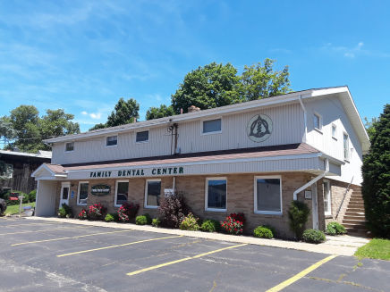

DR JAMES SCHMITT took over for his father. Dr. Kenneth Schmitt started the general dentistry practice in 1962. Dr. James Schmitt joined into the practice in 1989 as a general dentist. The practice has been in existence for over 56 years!

Address James R Schmitt DMD 108 High St Edinboro, PA 16412